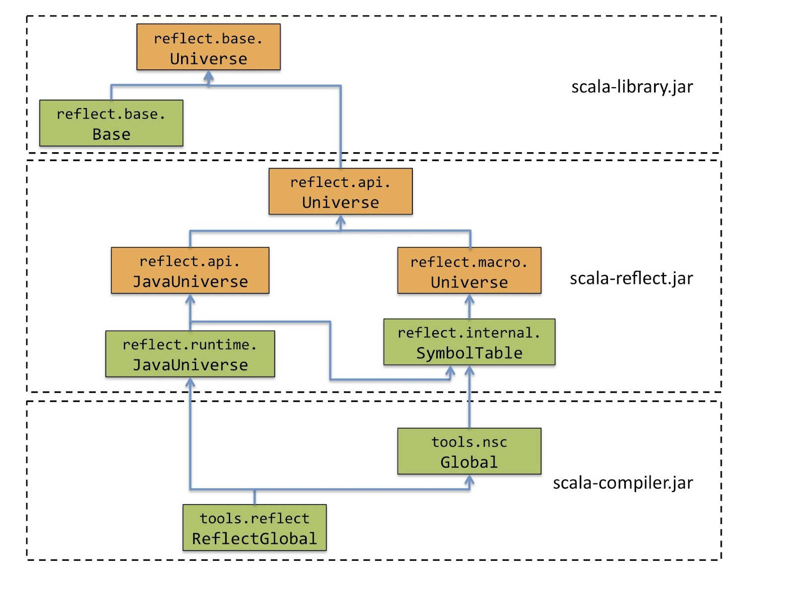

要するにScalaとしてはリフレクションの手段をちゃんと用意していなかった。
def hoge[T: ClassManifest] = {
val c = implicitly[ClassManifest[T]].erasure
...
}
scala> import scala.tools.scalap.scalax.rules.scalasig._
scala> val scalaSig = ScalaSigParser.parse(classOf[List[_]]).get
scala> scalaSig.topLevelClasses(0).children foreach println
TypeSymbol(A, owner=0, flags=12100, info=19 )
MethodSymbol(<init>, owner=0, flags=200, info=47 ,None)
MethodSymbol(companion, owner=0, flags=220, info=50 ,None)
MethodSymbol(isEmpty, owner=0, flags=300, info=56 ,None)
MethodSymbol(head, owner=0, flags=300, info=62 ,None)
...
Scala 2.9までと比べると大幅に整理、強化されている。
3番目はリフレクションとしては特徴的。構文木の作成はマクロと共通の機能になっている。
scala> import scala.reflect.runtime.universe._
import scala.reflect.runtime.universe._
scala> val t = typeTag[List[_]].tpe
t: reflect.runtime.universe.Type = scala.List[_]
scala> val m = t.member(newTermName("filter"))
m: reflect.runtime.universe.Symbol = method filter
scala> m.asMethod.isImplicit
res0: Boolean = false

scala> import scala.reflect.runtime.universe._
import scala.reflect.runtime.universe._
scala> import scala.reflect.runtime.{currentMirror => cm}
import scala.reflect.runtime.{currentMirror=>cm}
scala> val m = typeOf[List[_]].member(newTermName("head"))
m: reflect.runtime.universe.Symbol = method head
scala> cm.reflect(List(1,2,3)).reflectMethod(m.asMethod)()
res0: Any = 1